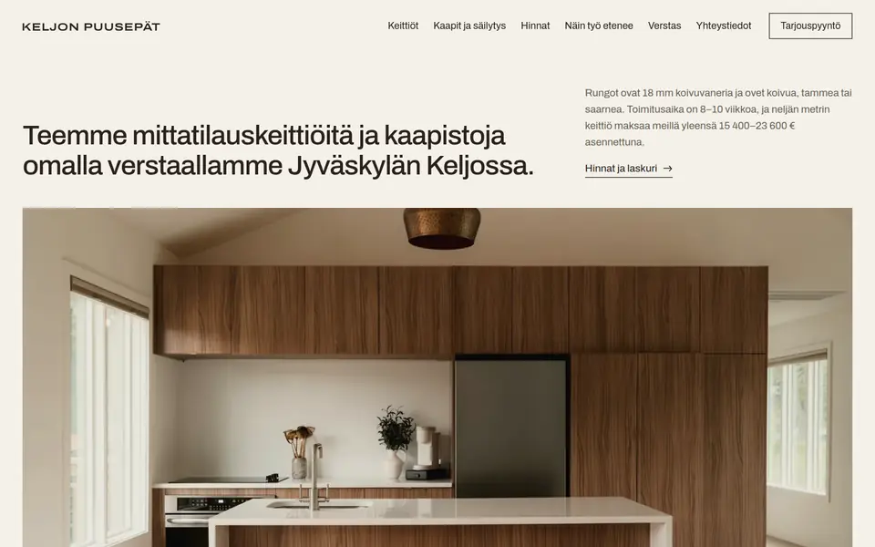
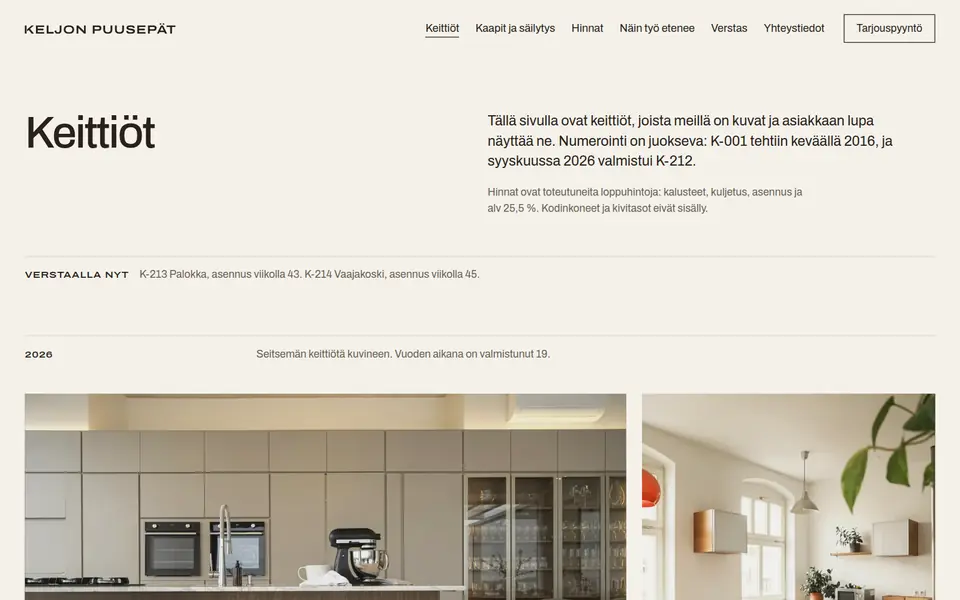
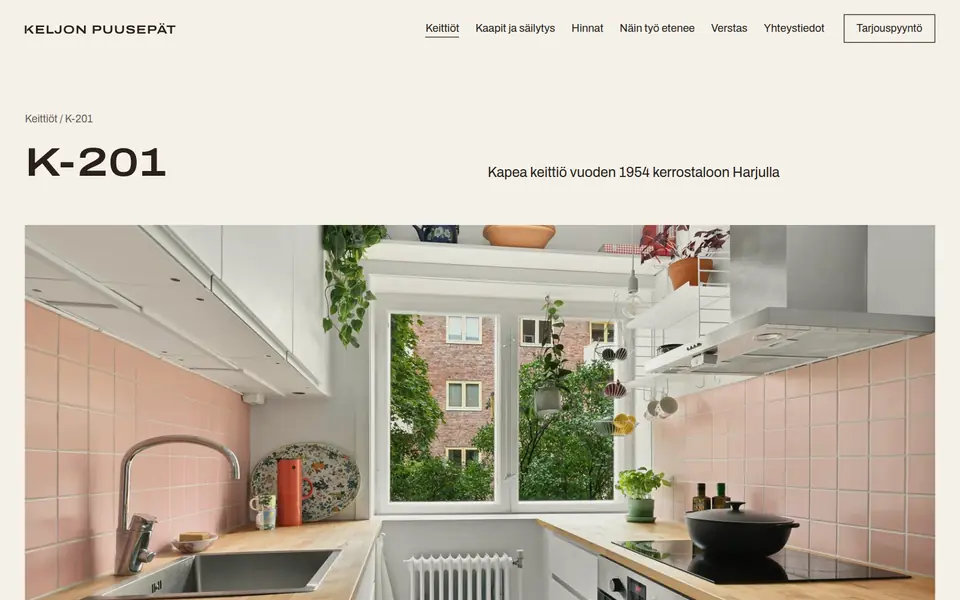
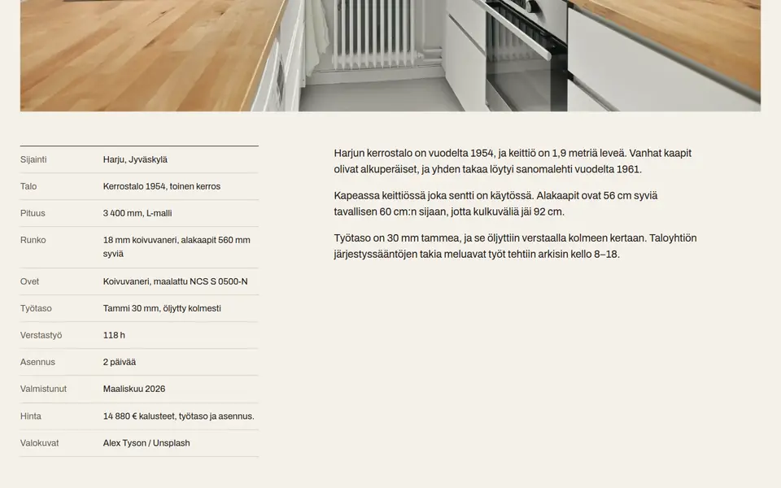
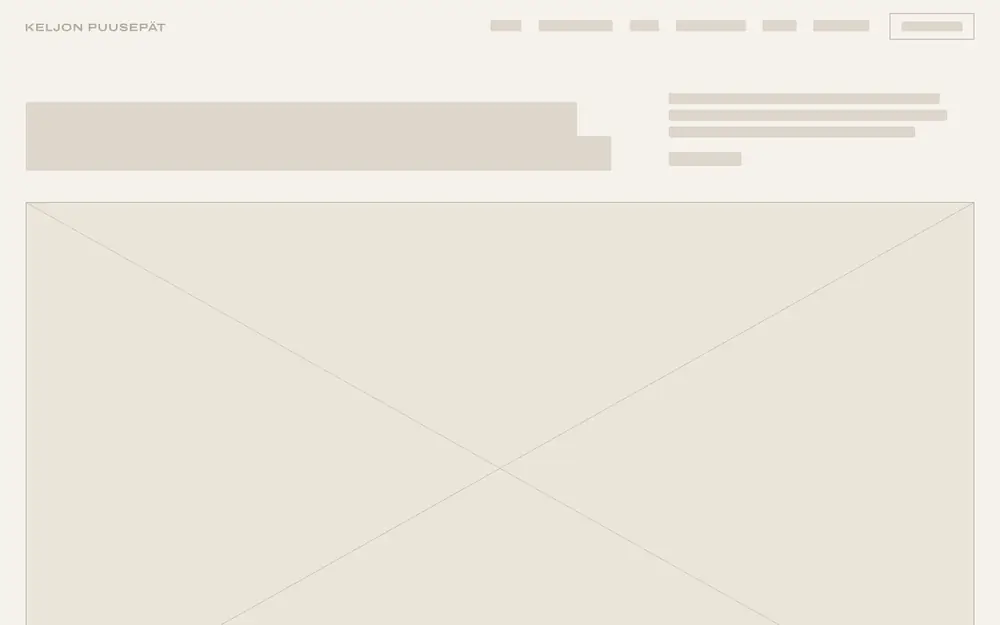
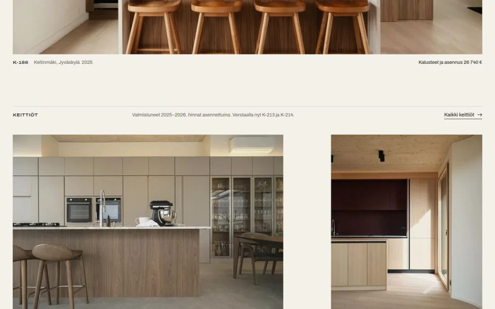
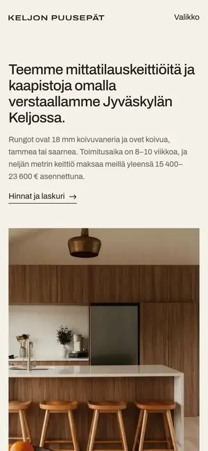
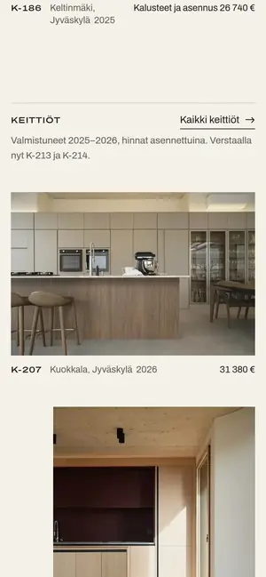
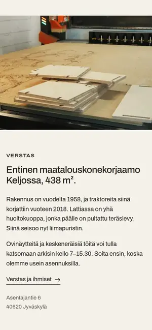
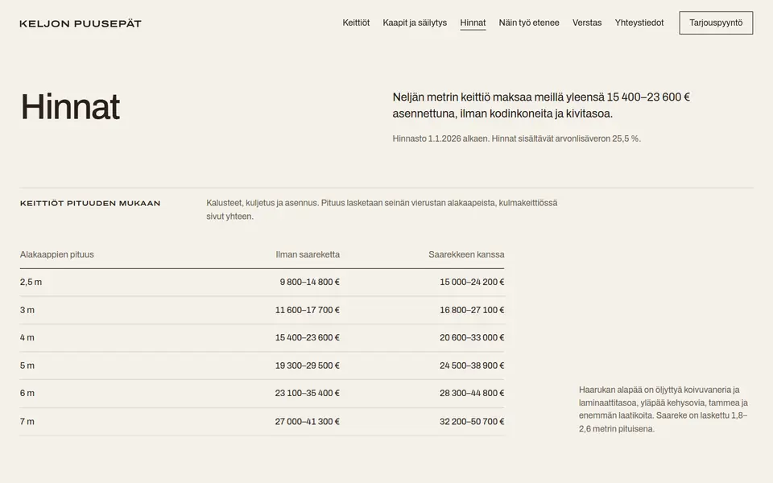

Työt 04
Keljon Puusepät
Hinnan suunta ennen puhelua.
- Ala
- Keittiöpuusepänliike
- Paikkakunta
- Jyväskylä
- Työ
- Nimi, tunnus, ilme ja sivusto
- Sivusto
- 19 sivua, etusivu 0,6 Mt
Konsepti Keljon Puusepät on kuvitteellinen yritys. Tein sivuston näyttääkseni, mitä puusepänliikkeen sivut voivat tehdä.

Lähtökohta
Keljon Puusepät on viiden hengen puusepänliike Jyväskylän Keljossa. Se tekee mittatilauskeittiöitä ja vaatekaappeja koivuvanerista ja massiivipuusta ja asentaa ne itse, ja toimitusaika on 8–10 viikkoa.
Suomalaisten puusepänliikkeiden sivuilla on yleensä iskulause ja kuvakaruselli mutta ei yhtään hintaa. Keittiötä suunnitteleva haluaa kuitenkin ensin tietää, mitä keittiö maksaa ja milloin se ehtii valmistua.


Ratkaisu
Sivuston runko on numeroitu keittiöluettelo. Jokaisella työllä on numero, paikka, vuosi ja toteutunut hinta, ja sama numero poltetaan tiskialtaan kaappiin huoltoa varten. Hintasivulla on taulukko keittiön pituuden mukaan, laskuri ja yksi keittiö eriteltynä riveittäin. Ilmeessä on kaksi pääväriä, koivunvaalea ja tumma tammi, ja yksi kirjasinperhe kahdessa leveydessä.

Mitä sivusto tekee
Hinnan suunta selviää ennen puhelua
Hintataulukko keittiön pituuden mukaan ja laskuri vastaavat yleisimpään kysymykseen.
Tarjouspyynnöt tulevat oikeaan aikaan
Toimitusaika ja seuraava vapaa verstasaika näkyvät, joten asiakas osaa varata ajoissa.
Työ palvelee asennuksen jälkeenkin
Numeroitu keittiöluettelo ja hoito-ohjeet auttavat asiakasta vielä vuosia myöhemmin.


Toteutus
- Nimi, K-tunnus, värit ja typografia
- Numeroitu keittiöluettelo ja arkisto vuodesta 2016
- Hintataulukko, laskuri ja yksi keittiö eriteltynä
- Hoito-ohjeet, takuu ja maksuerät
Puhelimella jo ensimmäinen näkymä kertoo toimitusajan ja hintahaarukan, ja valikon alareunassa ovat verstaan puhelinnumero ja tarjouspyyntö.




Kuvat ovat Unsplash-lisenssin alaisia kuvia, ja kuvaajat mainitaan sivustolla.
Avaa sivusto